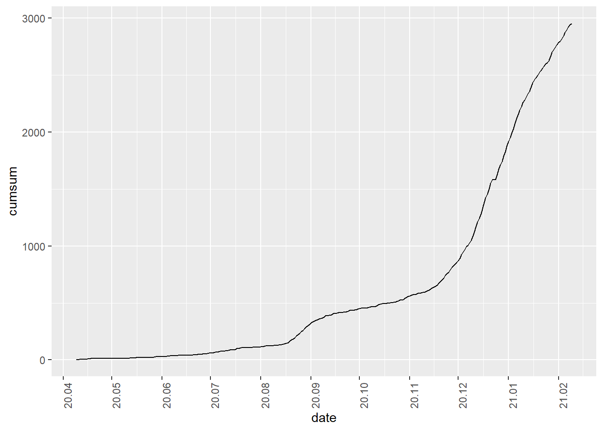

4.10 월별, 분기별, 연별 누적합계
시계열 데이터는 시간 동안의 데이터 흐름을 나타내지만 경우에 따라서 계속된 누적 합계를 나타내야 할 경우가 있다. 예를 들어 주간별 매출액의 연도별 누적 매출액, 웹사이트의 누적 사용자와 같은 경우이다. 누적합은 앞서 설명한 그룹핑과 함께 쓰면 더 좋은 결과를 낼 수 있다.
- 데이터프레임 : cumsum(), group_by(), collapse_by() 함수
데이터프레임에 저장된 시계열 데이터에 대한 누적합을 구하기 위해서는 dplyr 패키지의 누적합을 산출하는 함수인 cumsum()를 사용한다. 데이터를 그룹핑하지 않고 전체 데이터에 대한 누적합은 mutate()를 사용하여 cumsum() 결과 열을 생성함으로써 구할 수 있다.
### 누적 취업자수 산출
employees %>%
mutate(cumsum = cumsum(total)) %>%
select(time, total, cumsum) %>%
head(15) time total cumsum
1 2013-01-01 24287 24287
2 2013-02-01 24215 48502
3 2013-03-01 24736 73238
4 2013-04-01 25322 98560
5 2013-05-01 25610 124170
6 2013-06-01 25686 149856
7 2013-07-01 25681 175537
8 2013-08-01 25513 201050
9 2013-09-01 25701 226751
10 2013-10-01 25798 252549
11 2013-11-01 25795 278344
12 2013-12-01 25248 303592
13 2014-01-01 25050 328642
14 2014-02-01 25116 353758
15 2014-03-01 25463 379221### 0-9세 코로나 확진자의 누적 plot
covid19 %>%
mutate(cumsum = cumsum(`0-9세`)) %>%
select(date, `0-9세`, cumsum) %>%
ggplot(aes(date, cumsum)) +
geom_line(aes(group = 1)) +
scale_x_date(date_breaks = "1 month", date_labels = "%y.%m") +
theme(axis.text.x=element_text(angle=90,hjust=1))
전체 데이터에 대한 누적 합계가 아닌 연별, 월별, 주별 등의 주기별 누적합계를 구하려면 앞서 설명한 group_by()와 함께 사용하면 원하는 기간 동안의 누적 합계를 구할 수 있다.
employees %>%
group_by(year(time)) %>%
mutate(cumsum.total = cumsum(total),
cumsum.edu = cumsum(employees.edu)) %>%
select(time, total, cumsum.total, employees.edu, cumsum.edu) %>%
head(15)# A tibble: 15 x 6
# Groups: year(time) [2]
`year(time)` time total cumsum.total employees.edu cumsum.edu
<dbl> <date> <int> <int> <int> <int>
1 2013 2013-01-01 24287 24287 1710 1710
2 2013 2013-02-01 24215 48502 1681 3391
3 2013 2013-03-01 24736 73238 1716 5107
4 2013 2013-04-01 25322 98560 1745 6852
5 2013 2013-05-01 25610 124170 1774 8626
6 2013 2013-06-01 25686 149856 1786 10412
7 2013 2013-07-01 25681 175537 1813 12225
8 2013 2013-08-01 25513 201050 1811 14036
9 2013 2013-09-01 25701 226751 1794 15830
10 2013 2013-10-01 25798 252549 1790 17620
11 2013 2013-11-01 25795 278344 1793 19413
12 2013 2013-12-01 25248 303592 1779 21192
13 2014 2014-01-01 25050 25050 1748 1748
14 2014 2014-02-01 25116 50166 1786 3534
15 2014 2014-03-01 25463 75629 1814 5348tsibble: index_by() 함수
tsibble 객체에 대한 누적 합계는 앞서 설명한 그룹핑 방법과 유사한데, index_by()를 사용하여 grouping 하고 합계를 산출하는 방법의 sum()를 cumsum()으로, summarise()를 mutate() 로 바꾸어 주면 간단히 끝난다. mutate()를 쓰는 이유는 누적 합계는 모든 관측치에 필요한 열이기 때문이다.
employees.tsibble%>%
index_by(yearqtr = ~ yearquarter(.)) %>%
mutate(cumsum.qtrly = cumsum(total)) %>%
select(yearqtr, cumsum.qtrly) %>%
head(10)# A tsibble: 10 x 3 [1D]
# Groups: @ yearqtr [4]
yearqtr cumsum.qtrly time
<qtr> <int> <date>
1 2013 Q1 24287 2013-01-01
2 2013 Q1 48502 2013-02-01
3 2013 Q1 73238 2013-03-01
4 2013 Q2 25322 2013-04-01
5 2013 Q2 50932 2013-05-01
6 2013 Q2 76618 2013-06-01
7 2013 Q3 25681 2013-07-01
8 2013 Q3 51194 2013-08-01
9 2013 Q3 76895 2013-09-01
10 2013 Q4 25798 2013-10-01covid19.tsibble[, c(1,3)]%>%
index_by(yearweek = ~ yearweek(.)) %>%
mutate(cumsum.weekly = cumsum(`0-9세`)) %>%
head(10)# A tsibble: 10 x 4 [1D]
# Groups: @ yearweek [2]
date `0-9세` yearweek cumsum.weekly
<date> <dbl> <week> <dbl>
1 2020-04-09 2 2020 W15 2
2 2020-04-10 1 2020 W15 3
3 2020-04-11 1 2020 W15 4
4 2020-04-12 0 2020 W15 4
5 2020-04-13 2 2020 W16 2
6 2020-04-14 0 2020 W16 2
7 2020-04-15 0 2020 W16 2
8 2020-04-16 3 2020 W16 5
9 2020-04-17 1 2020 W16 6
10 2020-04-18 2 2020 W16 8xts
xts 패키지에서는 누적합을 산출하는 함수를 제공하지 않는다.
그렇기 때문에 누적합을 구하기 위해서는 몇 단계를 거쳐야 한다. 먼저 split() 함수를 사용하여 누적합을 적용할 시간 단위로 데이터를 분리해준다. 분리한 결과는 list의 형태로 반환되는데 이 결과를 lapply()를 이용하여 cumsum() 를 각각의 list에 적용시켜 준다. 이 결과는 list의 형태이기 때문에 do.call() 함수를 이용하여 하나의 xts 형태로 다시 묶어 주면 원하는 값을 얻을 수 있다.
이 과정에서 list를 다루는 함수인 lapply()와 do.call() 함수가 사용되었다. 이 두 함수 모두 매개변수로 받은 함수를 각각의 list 요소에 적용하는데 차이점은 lapply()의 경우 각각의 list의 모든 행에 대해 매개변수 함수를 적용하는데 반해 do.call()은 list의 요소에 대해 함수를 적용한다는 점에서 차이가 있다.
아래의 예에서 lapply()로 전달된 cumsum() 는 split()로 분리된 12개의 요소의 각 행(총 1,424개)에 적용되고 do.call()로 전달된 rbind() 함수는 split()로 분리된 12개의 요소에 적용되기 때문에 단순히 12번 호출된다.
do.call(rbind, lapply(split(employees.xts, f = 'year'), cumsum)) %>%
head(15) total employees.edu 증감 증감율
2013-01-01 24287 1710 NA NA
2013-02-01 48502 3391 NA NA
2013-03-01 73238 5107 NA NA
2013-04-01 98560 6852 NA NA
2013-05-01 124170 8626 NA NA
2013-06-01 149856 10412 NA NA
2013-07-01 175537 12225 NA NA
2013-08-01 201050 14036 NA NA
2013-09-01 226751 15830 NA NA
2013-10-01 252549 17620 NA NA
2013-11-01 278344 19413 NA NA
2013-12-01 303592 21192 NA NA
2014-01-01 25050 1748 -198 -0.8
2014-02-01 50166 3534 -132 -0.5
2014-03-01 75629 5348 215 0.9